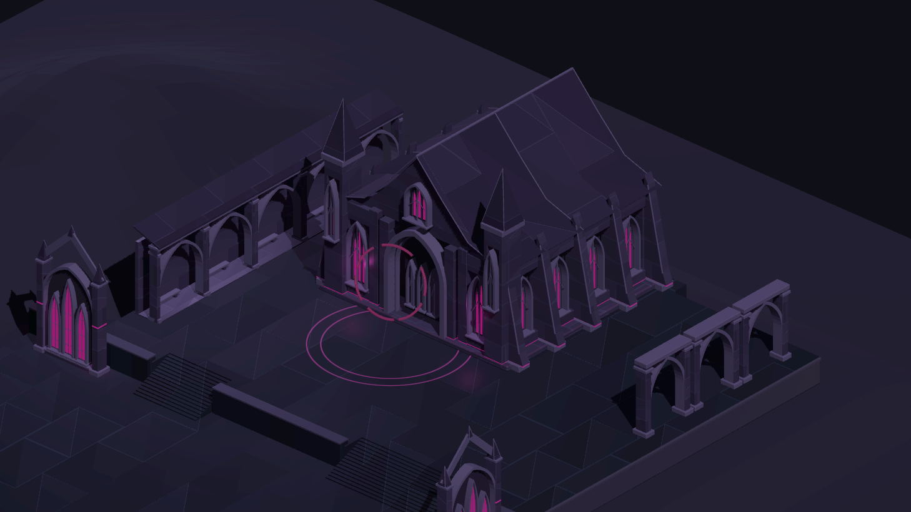
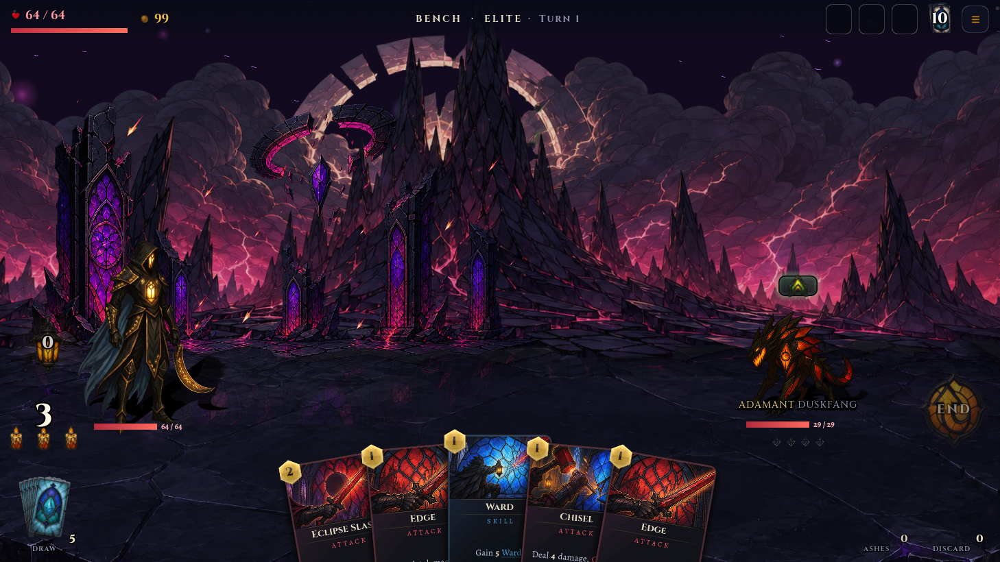
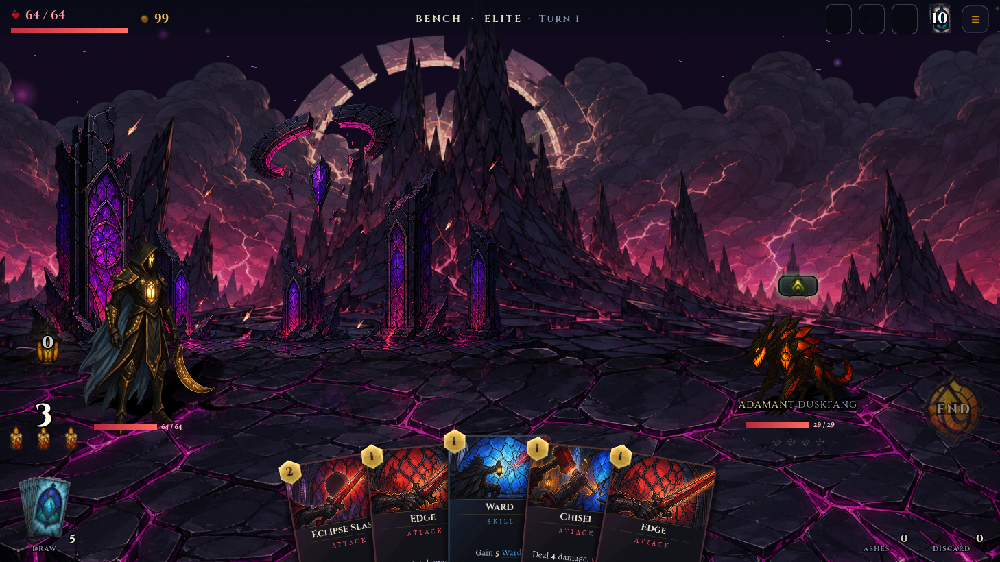

GLASSVOW · ACT III · STEP 3
The Obsidian Court
An intact royal precinct, rising through cloister courts towards the sovereign hall. Open paving carries the journey; a temporary light reveals the selected approach, and the full network appears when planning.
The place and the journey

The final court and its enclosing architecture. Select a travel view above to inspect the working native guidance.
Choose an approach, then follow it
Native recording: select each available event, use Travel to follow that exact branch, then open the whole-network view. This is a read-only Step 3 inspection; previewing a route does not advance the saved run.
The same stone, in combat
Large, quiet obsidian slabs replace the dense magenta crack network. The original platform silhouette, characters, camera, hand and distant scenery remain in place. The map and combat share the Act III finish authority, with separate treatment for their different perspectives.

Two captures of one frozen combat scene. Only the ground material changes.
Side-by-side ground comparison

Earlier groundAligned groundVerification and delivery scope
Nine native runs cover three seeds and three reference proportions. Fifteen real next-node selections and 112,656 precise floor samples pass. Route previews follow the selected current-to-destination edge; the snapshot remains unchanged. Full-network groups preserve usable selection targets and open for closer inspection. The ground retains the original alpha coverage and authored opacity across 294,912 comparison samples.
These are native desktop captures, not physical-device qualification. Act I and Act II retain their existing art. Act IV and Step 4 campaign-map integration remain separate work.
Delivery report · Native matrix · Ground coverage check · Native interaction recording